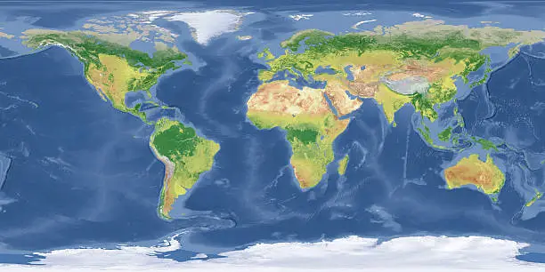
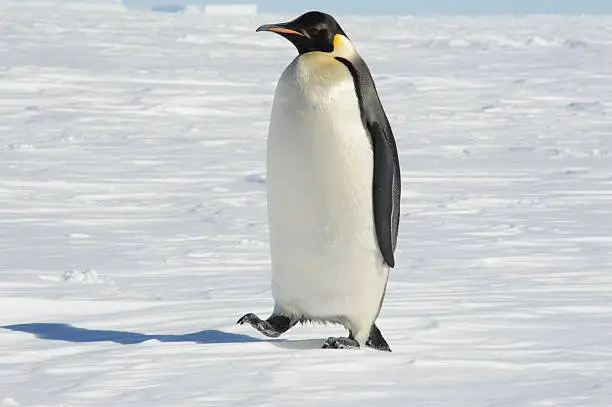
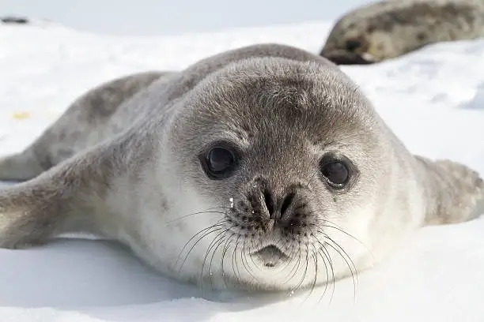
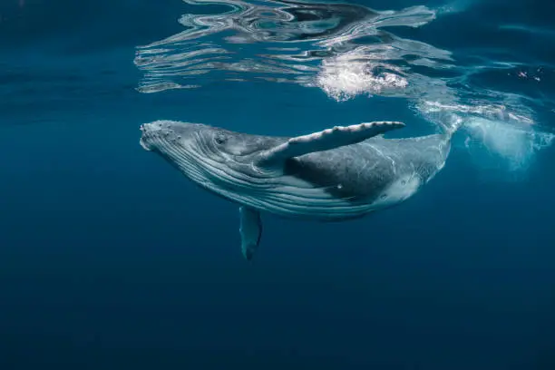
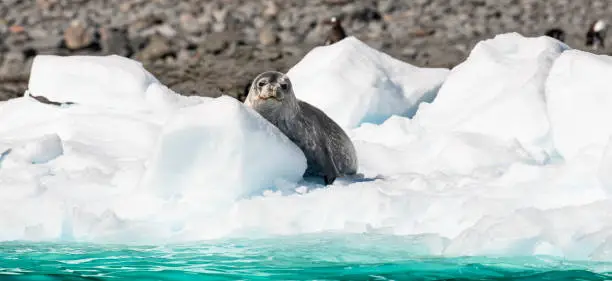

Ejemplos de Animales Antárticos
🔍 Haz clic en la foto para ver más texto

Pingüino Emperador
El pingüino emperador es el más grande de su especie y puede sobrevivir a temperaturas extremas bajo cero.
El pingüino emperador es el único pingüino que se reproduce durante el invierno antártico, enfrentando temperaturas de hasta -60°C y vientos de más de 100 km/h. Su dieta se basa principalmente en peces, calamares y krill, los cuales caza con gran habilidad bajo el agua. Este pingüino puede bucear hasta profundidades de 500 metros y permanecer sumergido durante más de 20 minutos, lo que lo convierte en uno de los mejores cazadores entre las aves marinas.
🔍 Haz clic en la foto para ver más texto

Foca de Weddell
La foca de Weddell es conocida por su capacidad para vivir bajo el hielo.
La foca de Weddell es una especie adaptada a las condiciones extremas del hielo antártico. Utiliza sus dientes para mantener agujeros respiratorios en el hielo, lo que le permite sobrevivir en un entorno hostil. Se alimenta principalmente de peces y calamares que encuentra bajo el hielo.
🔍 Haz clic en la foto para ver más texto

Ballena Jorobada
La ballena jorobada migra a las aguas antárticas en busca de krill.
La ballena jorobada es una especie migratoria que visita las aguas antárticas durante el verano para alimentarse. Utiliza técnicas únicas como la red de burbujas para atrapar grandes cantidades de krill, su principal fuente de alimento. Estas ballenas son conocidas por sus impresionantes saltos fuera del agua.
🔍 Haz clic en la foto para ver más texto

Leopardo Marino
El leopardo marino es un depredador ágil que se alimenta de pingüinos.
El leopardo marino es uno de los principales depredadores del ecosistema antártico. Con su cuerpo aerodinámico y fuertes mandíbulas, caza pingüinos y focas más pequeñas. Aunque pasa la mayor parte del tiempo en el agua, también descansa sobre los bloques de hielo flotantes.
🔍 Haz clic en la foto para ver más texto

Krill Antártico
El krill es la base de la cadena alimenticia en la Antártida.
El krill antártico es un pequeño crustáceo clave en el ecosistema marino. Sirve como alimento principal para muchas especies, incluidas ballenas, pingüinos y focas. Su abundancia hace posible la vida en este entorno extremo.